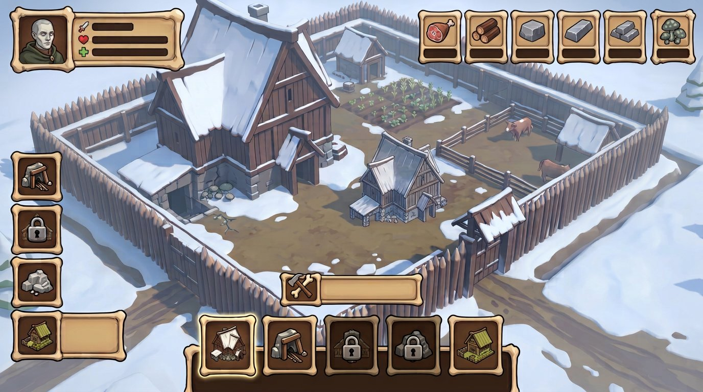
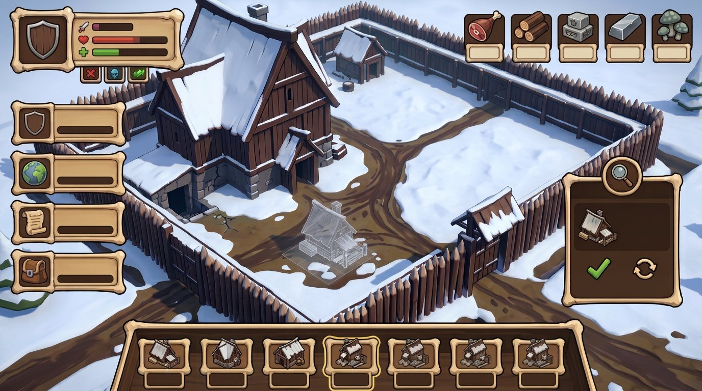
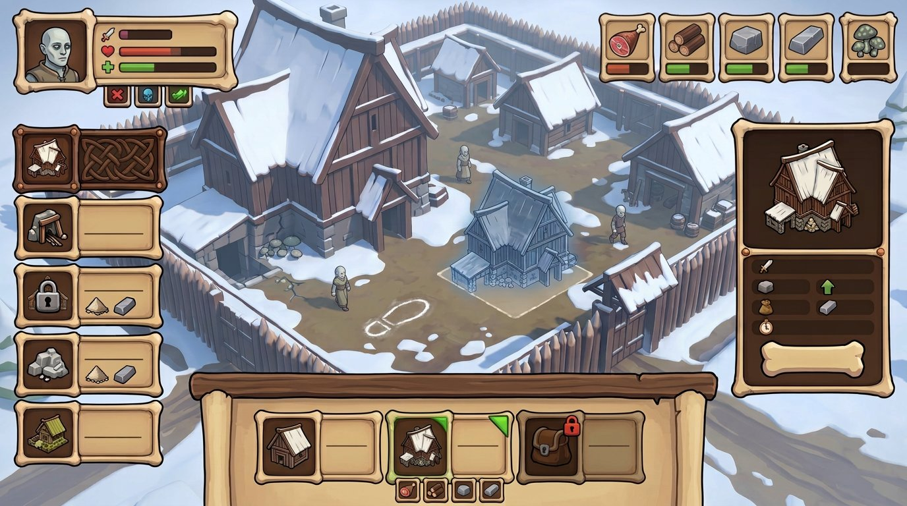
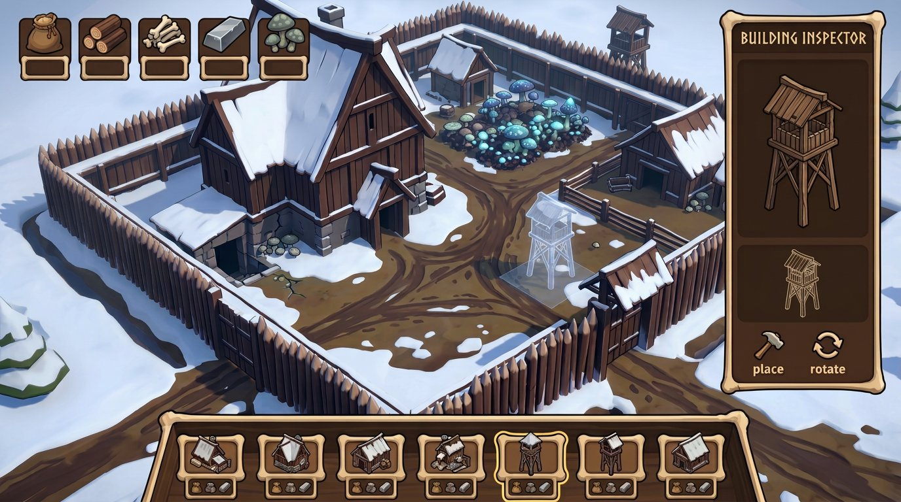
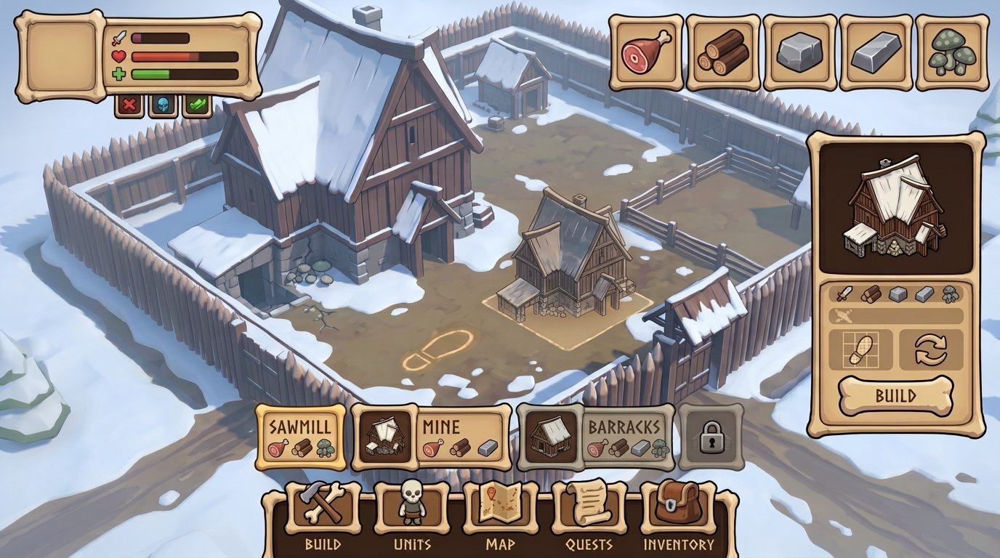

{kind=link}
{kind=link}
Пиктограммы
Единая толщина контура, схожая детализация и фиксированный размер оптической массы; ни один значок не выглядит случайно более реалистичным или более мультяшным.
The Dead Lords · Bone-Wood · refinement 06
Новый раунд уточняет понравившиеся вам № 04 и № 06 из предыдущей серии. Это пять полноэкранных игровых интерфейсов, а не набор разных стилей: я унифицировал рамки, штрих иконок, масштаб миниатюр зданий, состояния карточек и детали режима постройки.
Единая толщина контура, схожая детализация и фиксированный размер оптической массы; ни один значок не выглядит случайно более реалистичным или более мультяшным.
Читаемые силуэты в общем изометрическом ракурсе, без слипшихся стен и крыш. В ячейке — тот же объект, что в инспекторе и на свободном поле.
Одинаковые углы, отступы, тени, плашки и маркеры выбора. AI-надписи и цифры в самих картинках не считать игровыми данными.
Все варианты сохраняют Bone-Wood и строительный сценарий. Сравнивайте чистоту иконок и зданий, последовательность деталей и читаемость карточек.

Ресурсы, статусы и здания подчинены одной толщине линии, масштабу и логике ячейки.

Миниатюры каталога и здания на поле сближены по ракурсу, толщине контура и масштабу.

Одинаковая рамка различает обычную, выбранную и недоступную постройку; cost-значки повторяют ресурсные.

Карточка, миниатюра и призрак размещения связаны; footprint остаётся подсказкой, а не фиксированным слотом.

Наиболее цельная проверка: общий язык пиктограмм, карточек, миниатюр зданий и панели свободной постройки.
{kind=link}
{kind=link}
{kind=link}
{kind=link}
{kind=link}